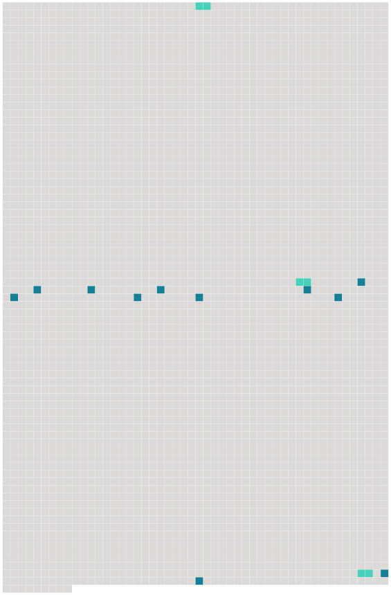

Longueur nb maillons : 14 mentions |
 |
Ces premières journées bourdonnent dans sa tête comme un champ de blé, que le vent agite, et sur lequel passent les grandes ombres [des nuages] … [115 phrases] Il commandait [aux nuages] : – « Je veux que [vous] alliez à droite. » – Mais [ils] allaient à gauche. Alors il [les] injuriait, et réitérait l’ ordre. Il [les] guettait du coin de l’ œil, avec un battement de cœur, observant s’ il n’ y [en] aurait pas au moins un petit qui lui obéirait ; mais [ils] continuaient de courir tranquillement vers la gauche. Alors il tapait du pied, il [les] menaçait de son bâton, et il [leur] ordonnait avec colère de s’ en aller à gauche : et en effet, cette fois, [ils] obéissaient parfaitement. [69 phrases] Ou bien, il se couchait sur le dos, et regardait courir [les nuages] : [ils] avaient l’ air de bœufs, de géants, de chapeaux, de vieilles dames, d’ immenses paysages. Il causait tout bas avec [eux] ; il s’ intéressait au petit nuage, que le gros allait dévorer ; il avait peur de ceux qui étaient très noirs, presque bleus, ou qui couraient très vite. |
 |
La ressource peut être téléchargée sur la page Ortolang
Si vous avez des questions ou vous voyez des erreurs, merci d'envoyer un mail à silvia.federzoni89@gmail.com
Site développé par S. Federzoni (contact)